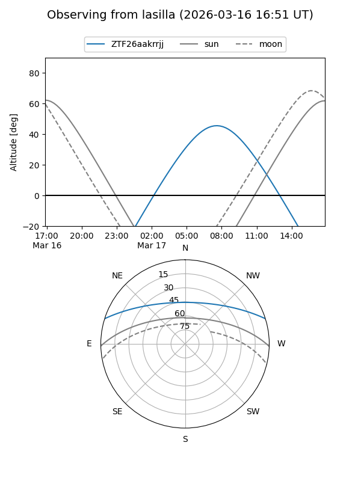
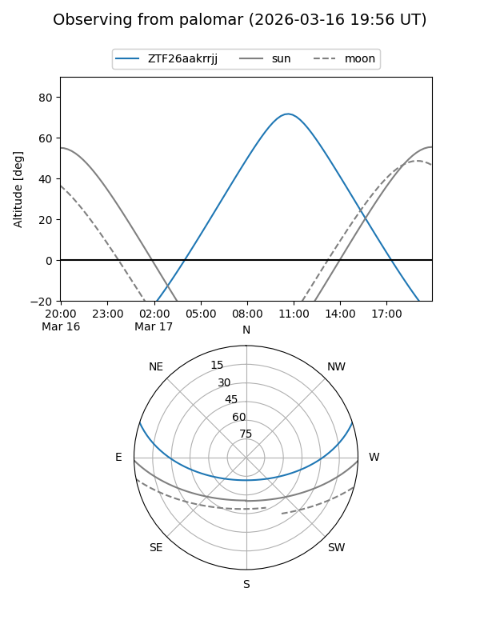

ZTF26aakrrjj
Target ZTF26aakrrjj at 2026-03-16 12:50
Aliases and brokers:
FINK: link
Lasair: link
ALeRCE: link
alt names
ZTF26aakrrjj (ztf,fink_ztf)
Coordinates:
equatorial (ra, dec) = 217.4974,+15.27292
equatorial (HMS+DMS) = 14:29:59.39,+15:16:22.52
galactic (l, b) = (10.5762,+64.22474)
Flags:
Photometry:
last ztfg=19.99
1 ztfg detections
Lightcurve
Visibility


Additional plots